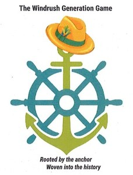
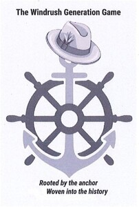

Trade Mark Journal No.2025/049 5 December 2025
UK00004294154 12 November 2025 (9,16,25,28,35,41)
Mark 1

Mark 2

- Class 9
- Downloadable postcards; Downloadable electronic greeting cards for sending by regular mail; Magnets; Fridge magnets; Magnets ( Decorative ) ; Virtual reality game software; Downloadable game software; Electronic game software; Downloadable computer game programs; Computer game programmes; Computer games; Mouse mats; Computer mousepads; Cases for children's eye glasses; Cases for eyeglasses and sunglasses; Eyewear pouches; Lens cases; Audio books; Downloadable electronic books; Downloadable series of children's books; Electronic publications featuring games; Publications in electronic format ( downloadable ) ; Downloadable digital photos; Electronic publications recorded on computer media; Pre-recorded videos; Downloadable videos; Prerecorded digital audio tapes; Audio recordings; Podcasts; Downloadable podcasts; Videocasts; Downloadable videocasts; Downloadable publications.
- Class 16
- Books; Non-fiction books; Fiction books; Books for children; Educational books; School writing books; Postcards; Postcards picture postcards; Stickers; Printed booklets; Printed stationery; Souvenir banknotes; Posters, Greeting cards; Pictorial prints; Printed books; Albums for stickers; Pens; Pencils; Pencil cases; Roll-up pencil cases; Pen cases; Stationary cases; Graphic art reproductions; Graphic art prints; Art prints; Graphic prints; Pictorial prints; Computer game strategy guidebooks; Photographic reproductions; Series of non- fiction books; Information books; Series of fiction books; Commemorative books; Printed publications; Activity books; Printed lectures; Thank you cards; Educational publications; Training manuals.
- Class 25
- Printed t-shirts, T-shirts; Short-sleeved T-shirts; Sweatshirts; Sports shirts; Sports shirts with short sleeves; Crop tops; Embroidered clothing; Wristbands [clothing]; Sweat bottoms; Baseball caps and hats; Caps [headwear]; Sports caps and hats; Head wear; Caps with visors; Knitted caps; Flip-flops; Sandals; Sandals and beach shoes; Trainers [footwear].
- Class 28
- Games; Board games; Electronic board games; Electronic educational teaching games; Card games; Quiz games; Electronic games; Counters for games; Role playing games; Trading cards for games; Playing cards and card games; Snow globes; Toy snow globes; Ornaments for Christmas trees, except lights, candles and confectionary; Decorations for Christmas trees; Candle holders for Christmas trees; Cases for play accessories.
- Class 35
- Retail services in relation to games; Retail services in relation to downloadable electronic publications; Retail services in relation to educational supplies; Retail services in relation to jewellery; Online retail services relating to jewellery; Retail services in relation to fashion accessories; Retail services in relation to clothing; Online retail services relating to clothing; Retail services relating to sporting goods; Retail services in relation to clothing accessories; Retail services in relation to bags; Online retail services relating to handbags; Retail services in relation to footwear; Retail services in relation to headgear; Retail services in relation to homeware; Online retail services relating to toys.
- Class 41
- Education and training services; Training courses; Providing courses of training for young people; Provision of education and training; Providing online electronic publications; Providing online electronic publications, not downloadable; Provision of online computer games; Providing online games; Providing online video games; Provision of online information in the field of computer games entertainment; Internet games ( non- downloadable ) ; Providing games; Virtual reality game services provided on-line from a computer network; Organisation of cultural events; Organising events for cultural purposes; Organising community cultural events; Organizing cultural and arts events; Providing cultural activities; Organisation of educational events; Organisation of exhibitions for cultural and educational purposes; Organisation of training; Educational and entertainment services, namely, providing motivational speaking services; Arranging and conducting of educational discussion groups, not on-line; Conducting workshops and seminars in personal awareness; Educating at senior high schools; Educational seminars; Conducting workshops and seminars in self awareness; Workshops for educational purposes; Workshops for cultural purposes; Conducting courses, seminars and workshops; Planning of lectures for educational purposes; Development of educational materials; Workshops for recreational purposes; Workshops for training purposes; Online education services.
Pauline Marcia Mayne
Representative: Get Your Business Started Ltd